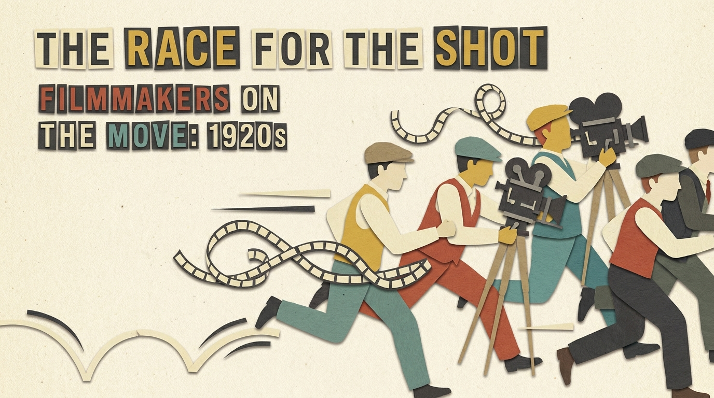
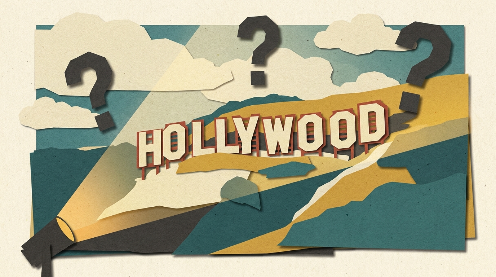
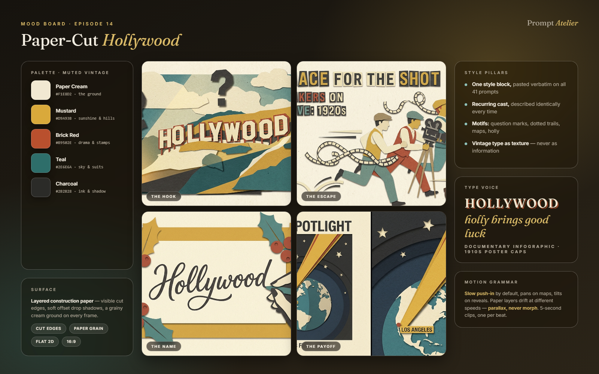
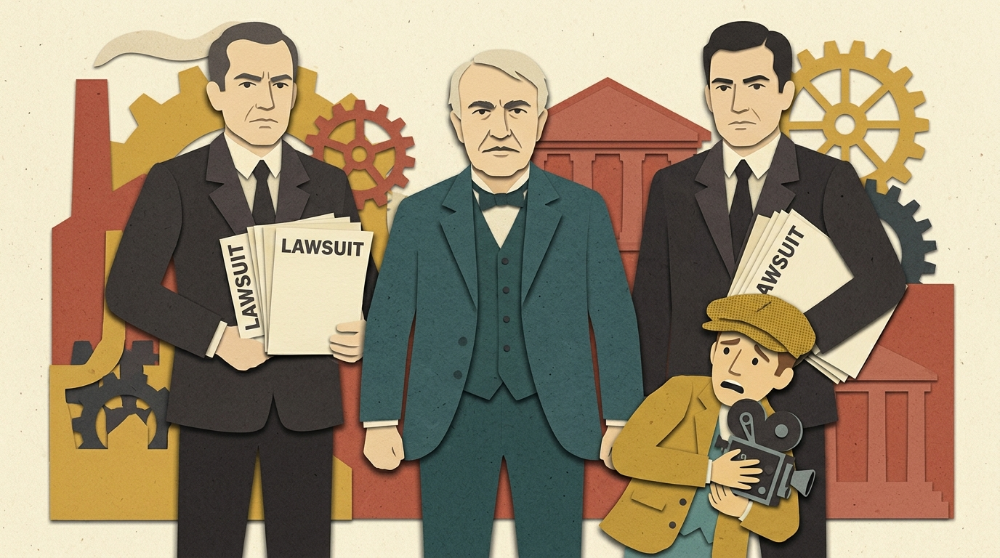
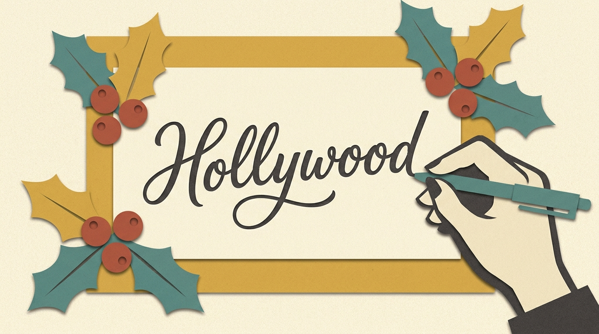
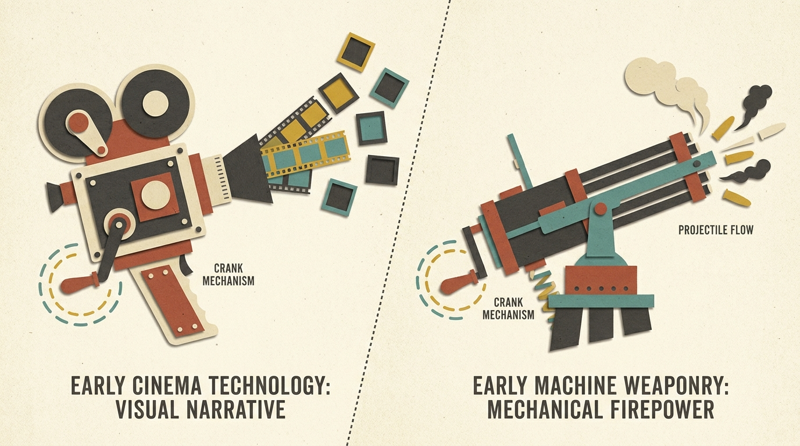
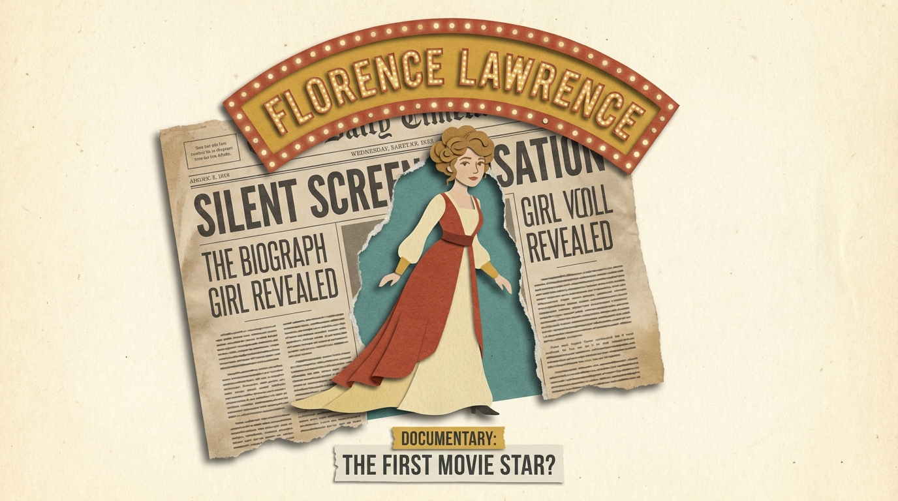
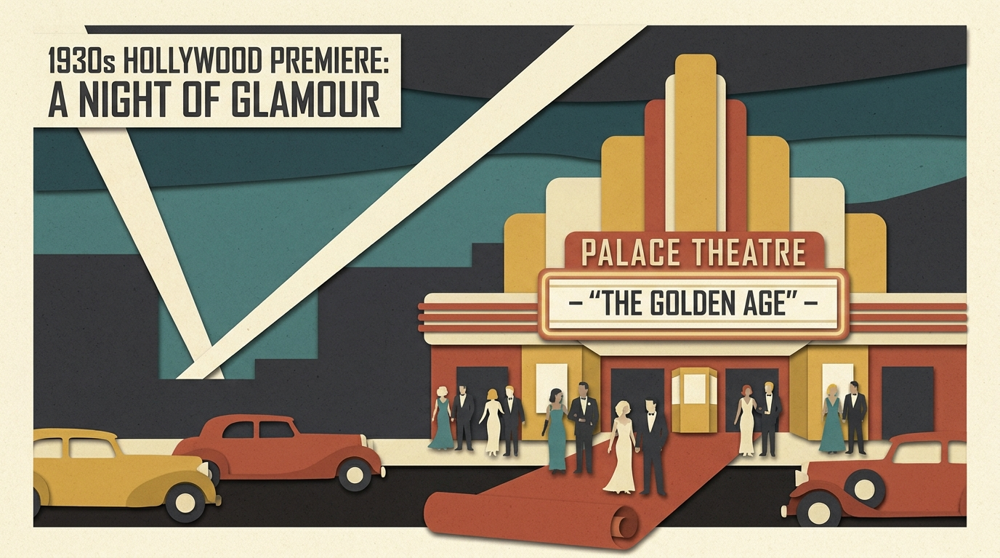
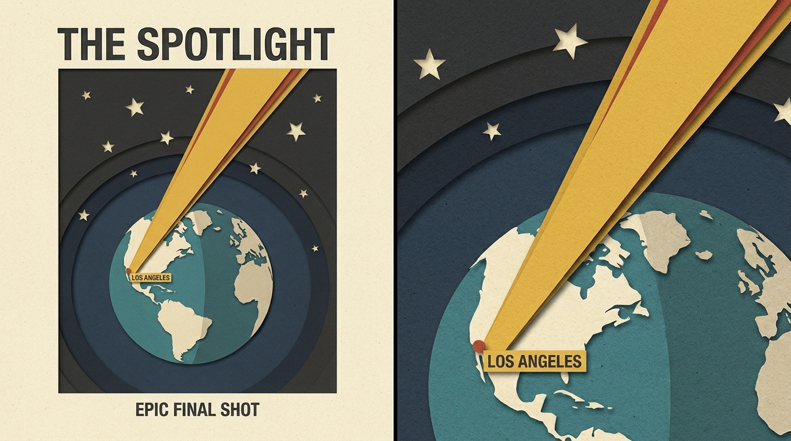

Case Study · Episode 14 · Browser-Tools Vox Pipeline
HOLLYWOOD WASN'T SUPPOSED TO EXIST: a paper-cut documentary in 36 beats
A three-minute Vox-style history documentary built entirely in browser tools. Claude researched the story, wrote the script to a word-count budget, broke it into 36 visual beats and compiled every image prompt into one text file. Google Flow's nano banana generated all 41 frames in a single ZappyFlow batch; one universal motion prompt turned them into 5-second parallax clips; ElevenLabs narrated, Suno scored, and CapCut cut it together. The story it tells: why the film capital of the world is a temperance colony that once banned movie theaters.

Watch the film · 3 minThe finished film · three minutes, thirty-seven paper-cut clips — playing on YouTube.
Overview
One style block, repeated until it becomes a film
No keyframe pairs, no API, no render pipeline — this episode is the browser-tools cousin of our Kie.ai workflows. Its discipline lives in one place: a single style sentence pasted verbatim onto all 41 image prompts, and a single motion prompt applied to every clip. Repetition is the whole art direction.
440Words of narration
36Visual beats · 1 per 5s
41Images · one batch
1Universal motion prompt
150Words per minute
The Look
The mood board
Muted vintage paper on a grainy cream ground — five colors, visible cut edges, offset shadows, and 1910s poster type used as texture. Distilled here after the fact; enforced during production by the style block itself.

Fig. 1 — the film's DNA on one card: palette with jobs assigned ("brick red · drama &
stamps"), the four tent-pole frames, and the motion grammar that animated them.
The Pipeline
Step by step
01
The Research
The brief was a topic, not a story: "why is Hollywood called Hollywood?" Web research surfaced the story worth telling — the American film industry was born in New Jersey; Thomas Edison's patent trust sued filmmakers until they fled 3,000 miles west; and the town they fled to was founded as an alcohol-free religious utopia, named "Hollywood" by Daeida Wilcox because holly brings good luck. It had banned movie theaters.
The research pass also collected the curiosities that give a Vox piece its texture: "cliffhanger" comes from serials shot on the New Jersey Palisades; a "shot" is called that because early cameras were hand-cranked like machine guns; the Hollywood sign was an 18-month real-estate billboard nobody took down.
Hook-first research Sources cited & kept
Fig. 2 — every documentary needs a villain. Edison and his lawyers, exactly as
beat 13 ordered them: "dramatic size contrast."
02
The Script
Documentary voiceover runs ~150 words a minute, so a 3-minute film is a 440-word budget — stated up front and spent deliberately. The draft went through two sizes: a 165-word cut that sacrificed every curiosity to keep one spine, then the 3-minute version that wove the facts back in where they belong chronologically — "cliffhanger" and "shot" anchored to the New Jersey act, the sign as the closer — never as a trivia list.
Ellipses and line breaks were written as pause marks for the voiceover; the closing line rhymes with the cold open. Names that text-to-speech would fumble shipped with phonetic respellings: Daeida reads as day-EE-da.
150 words / minute One spine, no trivia listsThe cold open & the close
Hollywood... wasn't supposed to exist.
The American film industry was born three
thousand miles away — in New Jersey. …
Hollywood was named for good luck. An accidental name,
an accidental sign, an accidental city... that became the most famous place on Earth.
Fig. 3 — the frame of the 440 words: open by breaking an assumption, close by
rhyming with the opening.
03
The Beat Sheet
The clip length dictates the shot list: 5-second generations mean beats = runtime ÷ 5 — thirty-six beats for three minutes, grouped into five acts. Each beat pairs one verbatim VO line with a one-sentence image description, so the eventual CapCut timeline is just beats laid end to end.
Consistency was engineered in the writing, not the generation: a small recurring cast — Edison, Daeida, the fleeing filmmakers — each described with the exact same wording every time they appear. With no character-reference feature in the toolchain, identical words are the character model.
36 beats · 5 acts Verbatim recurring cast
Fig. 4 — beat 20: "a woman's hand writing HOLLYWOOD in elegant cursive script,
holly branches framing the word." The answer to the whole video's question, in one frame.
04
The Images
Every beat became one line of a plain .txt file: style block, a --- separator, then the scene.
The style block — "Vox-style paper-cut collage illustration, layered construction paper with visible cut
edges… muted vintage palette… 16:9" — is identical on all 41 lines. ZappyFlow read the file and
drove Google Flow's nano banana through the whole batch unattended, saving frames to disk in beat order,
which means download order is edit order.
Forty-one prompts: the 36 beats, a cold open of a 1910s cameraman who turns his lens on the audience, and four golden-age frames to thicken the boom-years montage.
nano banana · 16:9 One .txt, one batchOne line of the prompt file (beat 10)
Vox-style paper-cut collage illustration, layered construction paper with visible cut edges and
subtle drop shadows, muted vintage palette of cream, mustard yellow, brick red, teal and charcoal,
grainy cream paper background, documentary infographic aesthetic, 16:9 --- Split composition,
left side a hand-cranked film camera with film frames flying out like bullet casings, right side a
hand-cranked vintage Gatling machine gun, matching circular crank motion lines on both, visual comparison
Fig. 5 — the bolded half never changes. Forty-one repetitions of one sentence
is what makes forty-one generations one film.

Fig. 6 — what came back: why a "shot" is called a shot. The model even added its
own infographic labels, unprompted.
05
The Motion
Every image was animated with the same universal prompt: slow push-in, paper layers drifting at different speeds for parallax, small elements floating — then the guards, which are the part that actually matters: do not add, remove, morph or redraw anything; do not change any text or letters; no zoom-out. Video models love to "improve" a frame; the guards are what keep Edison being Edison.
Every third or fourth clip swapped the push-in for a pan (maps, panoramas) or an upward tilt (cliffs, reveals) so thirty-seven clips don't share one heartbeat. The cold open got a custom action prompt — the cameraman cranks, notices the viewer, and swings the lens to face us; the lens filling the frame is the transition into the film.
One universal prompt Guards over instructionsThe universal motion prompt (abridged)
Animate this paper-cut collage illustration with subtle documentary-style motion: slow gentle
camera push-in… paper layers drifting at slightly different speeds for a parallax depth
effect… Keep every element exactly as it appears in the image — do not add, remove, morph or
redraw anything, do not change any text or letters. No camera shake, no zoom-out, no scene change.
Smooth, slow, minimal motion throughout. 5 seconds.
Fig. 7 — "no zoom-out" is deliberate: push-in hides the edges of the canvas,
zoom-out reveals there's nothing beyond them.
06
The Audio & the Cut
The clean script pasted into ElevenLabs unchanged — calm mid-register narrator, stability around 55%. Suno delivered the bed from a one-line brief: minimal documentary underscore, soft piano and strings, slowly building curiosity and momentum, instrumental. In CapCut, audio went down first — voiceover at +6.7 dB, music ducked beneath it — then the numbered clips dropped onto the timeline in file order and were trimmed to their lines.
The first VO line starts over the final second of the cold open, so the sound pulls the viewer through the cut. Transitions stayed subtle — slides and dips only — and the words the image model garbled were replaced with real editor type, which is more Vox anyway.
ElevenLabs · Suno Audio leads picture
Fig. 8 — beat 28, the birth of the movie star: Florence Lawrence steps through
her own faked obituary. The marquee text survived generation; the newspaper column type did not — and
never needed to.
The Cut
A cold open and five acts
The structure is the escape-story spine with the curiosities embedded where history put them — vocabulary lessons in New Jersey, the name in the utopia act, the sign as the punchline.
| TC | Act | Beat | Beats | Dur. |
|---|---|---|---|---|
| 0:00 | Cold open | A cameraman cranks… then turns the lens on us | 1 | 5s |
| 0:05 | Act I · Born in New Jersey | Edison, Fort Lee, "cliffhanger," why a shot is a shot | 2–10 | 45s |
| 0:50 | Act II · The Trust & the escape | Patents, lawsuits, the run west, Mexico exit route | 11–17 | 35s |
| 1:25 | Act III · The utopia & the name | Daeida writes "Hollywood," the town that banned theaters | 18–23 | 30s |
| 1:55 | Act IV · The first star | The anonymous Biograph Girl, a faked death, Florence Lawrence | 24–29 | 30s |
| 2:25 | Act V · The payoff | The trust falls, the boom, HOLLYWOODLAND loses its LAND | 30–36 | 35s |
The pacing argument — the vocabulary curiosities ride inside
Act I where they support the thesis ("even our words come from New Jersey") instead of interrupting the chase.
The Frames
Straight out of the batch
Ungraded nano banana frames, exactly as ZappyFlow saved them — one style sentence holding thirty-seven scenes together across four decades of story.
The escape · beat 14

Golden age · bonus frame

The payoff · beat 36
Worth pausing on — the model kept inventing editorial labels
("THE RACE FOR THE SHOT") in the film's own typeface. Bonus art direction when it spells; editor type when it
doesn't.
Behind the Scenes
What we learned (and what nearly broke)
The honest notes — six lessons this film paid for.
The model watermarked itself
Prompting "Vox-style" taught the model too well: one cliffhanger frame came back with a small Vox logo in the corner, unprompted. Style names summon brands. Crop it, regenerate it, or describe the aesthetic without the trademark — but check corners before you cut.
Text is a coin flip
The same model that rendered FLORENCE LAWRENCE in perfect marquee bulbs produced "HOLLYWOO D" on the sign and invented the caption "ANTICIPATION BUILDS" in dead-serious poster caps. Rule kept from every episode: words the audience must read are editor type, never pixels.
Identical words are the character model
No reference images in this pipeline, so Edison is "elderly white-haired man in a dark three-piece suit" in every single prompt, letter for letter. Paraphrase the description once and you've cast a different actor.
One two-part action per film
The cold open — crank, notice, swing the lens — was the only clip that needed retries. Sequential character actions are the hardest thing a video model does; budget retries for one hero clip and keep every other beat ambient.
The clip length writes the shot list
Flow's clips run 5 seconds, so the beat count is just runtime ÷ 5. Working backwards from the tool's constraint made the script, the prompt file and the timeline agree before anything was generated.
Kill facts, don't compress them
The 1-minute draft proved the spine; the 3-minute version re-admitted facts one at a time, each anchored to its place in the chronology. What still didn't fit — orthochromatic makeup, the "trailer" — was cut whole rather than crammed. A trivia list is where documentaries go to die.
Toolbox
Everything used, and what it did
Claude Code
Research, script, beat sheet, every prompt — and this page
Research, script, beat sheet, every prompt — and this page
Google Flow
Image & video generation home, 16:9 throughout
Image & video generation home, 16:9 throughout
Nano Banana
All 41 paper-cut frames from one prompt file
All 41 paper-cut frames from one prompt file
ZappyFlow
Chrome extension: batch-fed the .txt through Flow unattended
Chrome extension: batch-fed the .txt through Flow unattended
Flow video model
5-second parallax clips from one universal prompt
5-second parallax clips from one universal prompt
ElevenLabs
The 440-word narration, one calm take
The 440-word narration, one calm take
Suno
Instrumental documentary underscore
Instrumental documentary underscore
CapCut
The edit: audio-first timeline, trims, dips, 1080p export
The edit: audio-first timeline, trims, dips, 1080p export